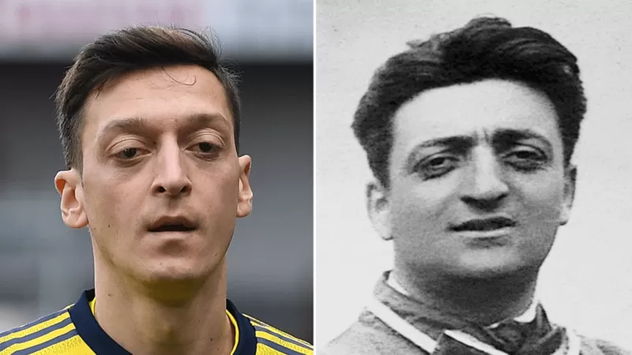

Qué dice la ciencia sobre las personas sin ningún parentesco que se parecen mucho físicamente
Un parecido que ha dado mucho de qué hablar en internet: Mesut Ozil, futbolista alemán de ascendencia turca, nació en 1988 y Enzo Ferrari, fundador de la escudería Ferrari, nació en Italia en 1898.
Agnes viajaba en un tren cuando un hombre se le acercó y le empezó a hablar sobre temas de los que ella no tenía idea.
El sujeto no tardó en darse cuenta de que "ella no era quien creía que era".
Y tampoco se demoró en contarle que conocía a su doppelgänger, término en alemán para referirse a los dobles.
Agnes se animó a conocer a la amiga de su compañero de tren y, a través de Facebook, vio a Ester. Después, se reunieron personalmente.
"Nos llevamos muy bien de inmediato. No es solo nuestra apariencia, sino también nuestras personalidades que se parecen".
Para Ester, "es extraño y maravilloso ver parte de ti en otra persona".
Pero hay algo en particular que lo hace "muy especial: que Agnes y yo seamos tan parecidas en carácter e intereses".
"Tenemos los mismos gustos: música, ropa, tatuajes".
Cuando Ester tenía 32 años y Agnes 28, posaron para François Brunelle, quien compartió con BBC Mundo la historia de las dos holandesas.
El fotógrafo canadiense recuerda que cuando las vio se sintió "muy feliz de ver cuánto se parecían".
Y es que el artista lleva años retratando a personas, en diferentes partes del planeta, que no son parientes y se parecen mucho.
Así las fotografió en 2015:
Agnes y Ester son solo dos de cientos de participantes del proyecto de Brunelle "I'm not a look-alike!" ("No soy un parecido").